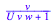

diff(sqrt(x*y), x)
diff(E^(x*y), x)
diff(ln(x-2*y), x)
diff(ln(x-2*y), y)
diff(1+(x*ln((x*y)-5)), x)
diff(1+(x*ln((x*y)-5)), y)
ln(1)

funcplot3d((x^2)/(x*y - 5), x=-10..10, y=-10..10)
funcPlot3d((x^2)/(x*y - 5), x=-10..10, y=-10..10)
plotfunc3d((x^2)/(x*y - 5), x=-10..10, y=-10..10)
plotfunc3d((x^2)/(x*y - 5), x=1..3, y=2..4)
plotfunc3d((x^2)/(x*y - 5), x=1.9..2.1, y=2.9..3.1)
ln(1)

diff(y + sin(x/y), y)
cos(0)

a:=v/(1+(U*v*w))

diff(a, U)
diff(a, v)